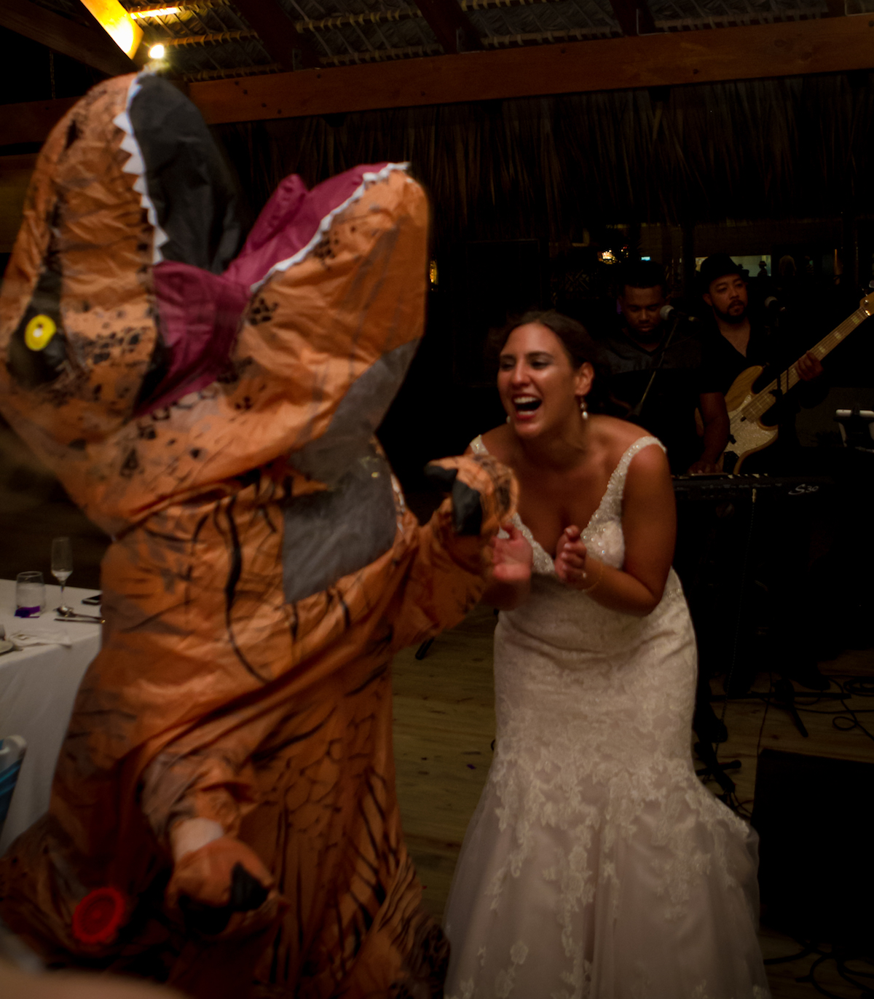

For those who don’t know me, this page can seem all over the place. So how about, you get to know me! My name is Jennifer Artschwager. I like to think that throughout life we reinvent ourselves several times. This keeps our minds sharp, experiences exciting, and life overall entertaining.
I graduated with an AAS degree is Accessories Design from the Fashion Institute of Technology. For my BA, I switched majors to Visual Arts Management, otherwise known as the business of art. Throughout life I have always enjoyed painting, creating, designing and overall using my eye to make my world a much prettier place.
Post college I started my first Career in Aquatics as the Aquatics Director of a local YMCA. Then I began working at Asphalt Green as the Associate Director of Aquatics. Here I got to learn from the best, work with an amazing team of people, and I thoroughly enjoyed every moment of it. It was New York City that I fell of love with, which had me move to South Jersey to reinvent myself and move on to career path #2.
In New Jersey I began working as a coordinator of an animal shelter. The most amazing part of this experience is the number of people who volunteer their time to help homeless animals. You meet some of the kindness people you’ll ever meet managing a volunteer driven program. I fell in love with the field and learned all that I could from everyone I met.
I began networking with shelters across the nation. In about 2 years I was hosting apprenticeship programs and teaching others how to manager large scale volunteer ran programs. Though rewarding, I became stagnant. I was not learning. Sure cuddles from puppies and kittens are wonderful but if your brain is turning into a pile of mush in the process, well… it was time to only cuddle my own pets.
Insert, career move #3, on the search to the ever changing, never complete work of computer programming.
I sat down and said to myself… what’s a career choice that I can never know everything, that there is no cap on learning, that as soon as i know all the answers, the answers change. You guessed it… Computer programming! Now in stage three I have been working to create websites and to fix all those “i wish the database did this report…” problems of my past.